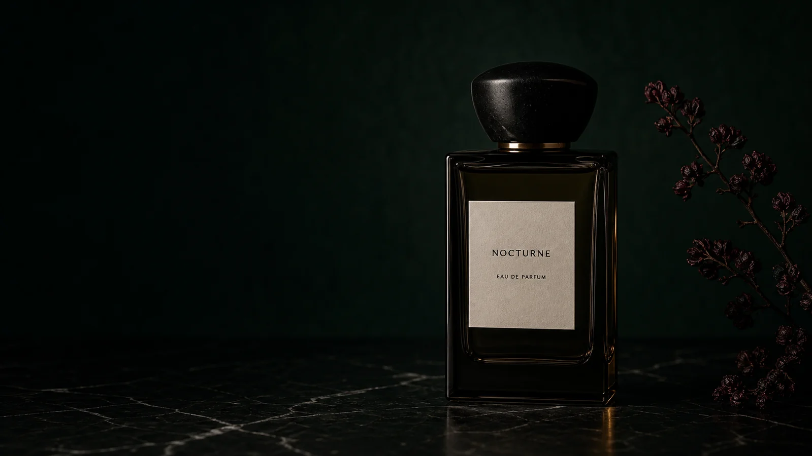
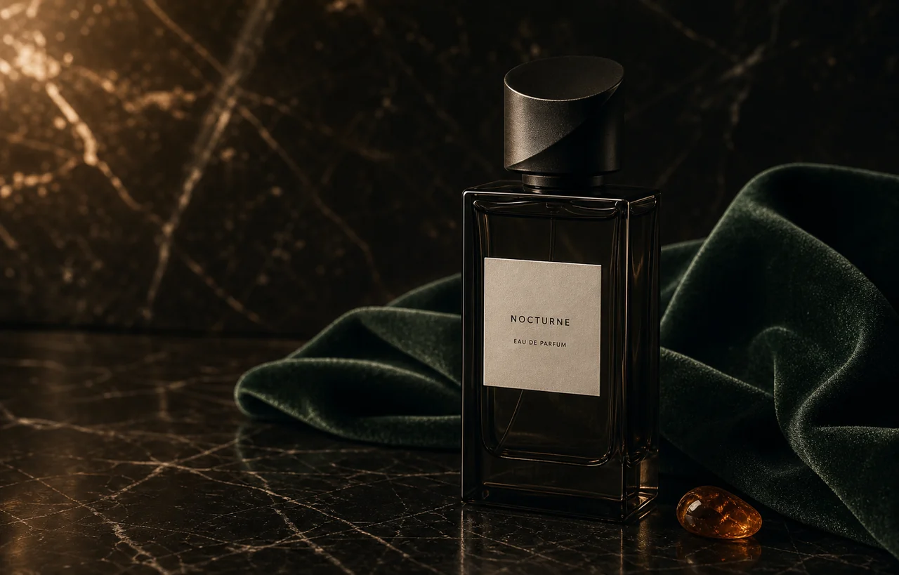
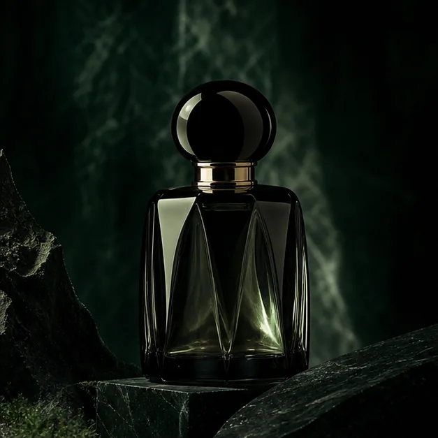

Nocturne / fine fragrance
A SCENT BEFORE THE NOTES.
Fine fragrance deserves a slower route than a product grid: start with the moment, then guide visitors to samples, bottles and refills through a clear decision.
Find your scentA discovery flow can protect the atmosphere of a fine fragrance brand while still giving a first-time visitor a confident next action.

Brand feature
MAKE AN INVISIBLE PRODUCT EASIER TO CHOOSE.
Visitors begin with mood, time of day and intensity. Fragrance notes deepen the decision later, while the Discovery Set becomes a clear, low-pressure first step.

Scent finder
CHOOSE A MOMENT TO KEEP.
Three intuitive mood-led entry points replace a wall of notes and guide visitors toward a sample set.
Late light / Discovery setSaffron, pear skin and amber resin. Explore it through the Discovery Set before committing to a full bottle.

Find the mood that makes the first spray feel personal.
Ritual route
FROM FIRST SPRAY TO A REASON TO RETURN.
The journey starts with a mood and makes the next action clear without reducing the decision to price alone.